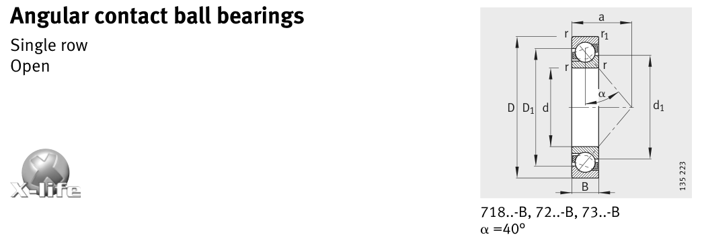

Original catalogue drawing - FAG Schaeffler HR 1, page 244

Scanned from the manufacturer catalogue page listing this part number. All part numbers printed on that table share the same drawing.
Scale cross-section
Blue = inner / outer ring, yellow = rolling element. Drawn to scale from this part's own
dimensions for selection reference only - not a manufacturing or assembly drawing.
Dimension table (mm / inch)
Symbol
Dimension
mm
inch
d
Bore diameter
50
1.9685
D
Outside diameter
90
3.5433
B
Inner-ring / bearing width
20
0.7874
r
Chamfer (min)
1.1
0.0433
Notes
Weights are given in kg. Load ratings are shown in both the original catalogue units and the converted value (1 N = 0.2248 lbf). Data is provided for selection reference only - confirm against the latest official catalogue before ordering.
Main dimensions
Bore d (mm)
50
Outside dia. D (mm)
90
Width B (mm)
20
Inner-ring OD d1 (mm)
66.2
Inner-ring shoulder dia. D1 (mm)
74.8
Load ratings & speeds
Basic dynamic load rating Cr (lbs)
8430
Basic static load rating Cor (lbs)
6407
Basic dynamic load rating Cr (N)
37500
Basic static load rating C0r (N)
28500
Fatigue limit load Cur (N)
1920
Limiting speed nG (rpm)
8,000
Reference speed nB (rpm)
7,600
Effective load centre a (mm)
39
Weight
Weight (kg)
0.458
Mounting dimensions (fillets / shoulders)
Housing fillet r max (mm)
1.1
Chamfer r1 min (mm)
0.6
Shaft shoulder da (mm)
57
Housing shoulder Da (mm)
83
Housing shoulder Db (mm)
85.8
Housing fillet ra max (mm)
1
Housing fillet ra1 max (mm)
0.6
Bearing life (ISO 281 basic rating life)
C / P
Equivalent load P (N)
L10 (106 rev)
L10h at 2,600 rpm
4
9,375
64
410
6
6,250
216
1,385
8
4,688
512
3,282
10
3,750
1,000
6,410
15
2,500
3,375
21,635
Basic rating life per ISO 281: L10 = (C/P)3 with C = 37,500 N. Hours = L10 x 106 / (60n). Life-modification factors for lubrication, contamination and temperature (aISO) are not included.
Source & traceability
Brand
FAG
Source catalogue
FAG / Schaeffler Rolling Bearings HR 1
Catalogue page
p.244 (dimensions)
Load ratings in newtons, fatigue limit load Cur, limiting speed nG and reference speed nB.
Send us the quantity you need and we will come back with price and
lead time, normally within 24 hours. Equivalent parts from other brands can be quoted at the same time.